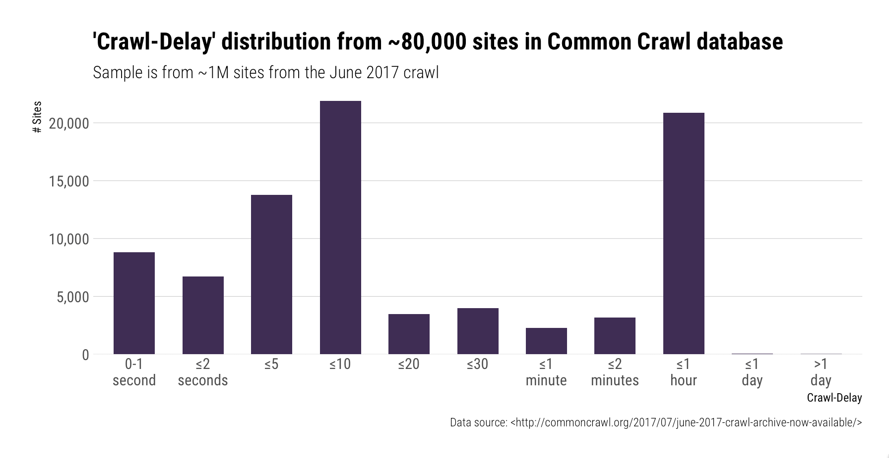
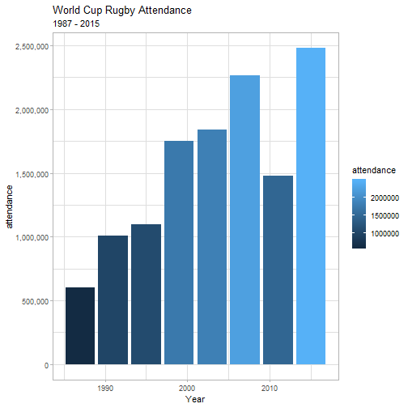
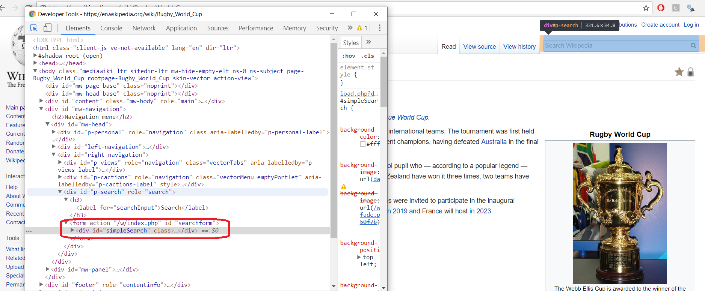
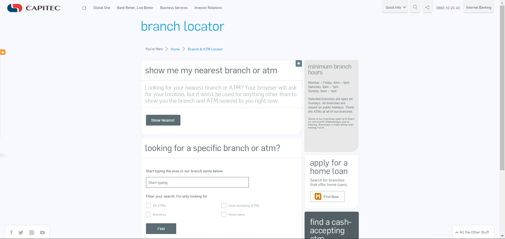
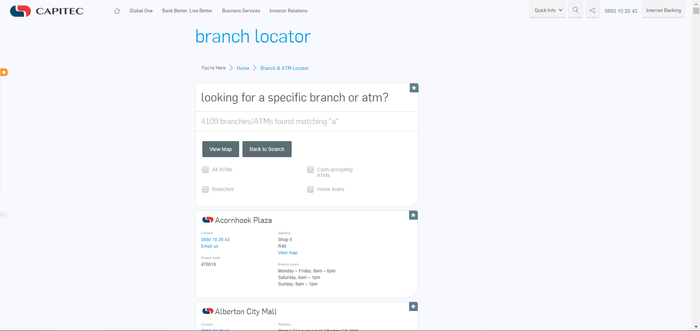
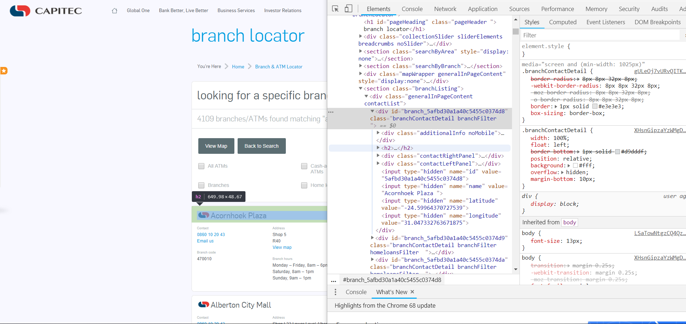

Scraping static websites with rvest
Exploring Rvest
Hanjo Odendaal
First things first: Putting it all in perspective.


Ethics
With great power comes great responsibility
The FAQ of Scraping
There is a big distinction here, we have to seperate ethics vs law
Is scraping illegal?
- Well... yes and no. At the moment the law is still undefined and has to catch up a lot to define online data collection. But, that being said, malicious attempts to halt a service of a website is a DDOS attack and is illegal
What can I do to ensure I dont I dont expose myself or the company in a 'legal/ethical' scraping project?
- Personal data is a big no no. IF you are collecting data from a website which contains personal information. Make sure you are not collecting/saving any of it. Transform and ensure complete anonymization of data points
The rules of the game
10 Commandments of the data scraper Find the orignal here
I Shall Go Through Appropriate Channels if Available: If the website has a public API that provides the data, use it and avoid scraping all together
Consider The Poor Sysadmin: Provide a User Agent string that makes intentions clear and provides a way for sysadmins to contact you with questions or concerns
I Am not A Robot: Request data at a reasonable rate (~5sec wait). Don't ever be confused for a DDoS attack. Play nice with others
I shall not become addicted to data: Collecting data without a cause is very Big Brother. Only take what you need
10 Commandments of the Data Scraper (Cont.)
I Shall Not Plageriase: If the website has a public API that provides the data, use it and avoid scraping all together
Not Just Interesting: Create new value from the data
Realise People Are People: Why scrape when you can just contact the holder who might SFTP it to you?
You Are Responsible, Not Your Boss: You are the expert, guide your line managers and highlight when you are uncomfortable
robotstxt
Informal arrangements
Web site owners use the /robots.txt file to give instructions about their site to web robots; this is called The Robots Exclusion Protocol.
- Robots.txt is still a very informal "institution", and there is no authoritative list of robots. Rvest wraps around the curl and httr packages-libraries, and neither has a robot name, beyond the one you could give them
User-agent: *
Disallow: /cgi-bin/
Disallow: /tmp/
Disallow: /~joe/
User-agent: Google
Disallow:
User-agent: *
Disallow: /
Using Robotstxt
if(!require(robotstxt)) install.packages("robotstxt")
library(robotstxt)
rtxt <- robotstxt(domain = "www.fbi.gov")
rtxt$comments %>% tbl_df
## # A tibble: 8 x 2
## line comment
## <int> <chr>
## 1 3 # Define access-restrictions for robots/spiders
## 2 4 # http://www.robotstxt.org/wc/norobots.html
## 3 8 # By default we allow robots to access all areas of our site
## 4 9 # already accessible to anonymous users
## 5 16 # Add Googlebot-specific syntax extension to exclude forms
## 6 17 # that are repeated for each piece of content in the site
## 7 18 # the wildcard is only supported by Googlebot
## 8 19 # http://www.google.com/support/webmasters/bin/answer.py?answer=4~
What part of the site may I visit?
FBI literally gives us almost free rein on their website!
rtxt$permissions
## field useragent value
## 1 Disallow *
## 2 Disallow * /@@search?
## 3 Disallow * /search?
## 4 Disallow * /*atct_album_view$
## 5 Disallow * /*folder_factories$
## 6 Disallow * /*folder_summary_view$
## 7 Disallow * /*login_form$
## 8 Disallow * /*mail_password_form$
## 9 Disallow * /*search_rss$
## 10 Disallow * /*sendto_form$
## 11 Disallow * /*summary_view$
## 12 Disallow * /*thumbnail_view$
## 13 Disallow * /plonejsi18n$
## 14 Disallow * /*@@castle.cms.querylisting*?
What part of the site may I visit?
You can also extract the original robotxt file from a website using get_robotstxt()
get_robotstxt("fbi.gov") %>%
parse_robotstxt()
## $useragents
## [1] "*"
##
## $comments
## line
## 1 3
## 2 4
## 3 8
## 4 9
## 5 16
## 6 17
## 7 18
## 8 19
## comment
## 1 # Define access-restrictions for robots/spiders
## 2 # http://www.robotstxt.org/wc/norobots.html
## 3 # By default we allow robots to access all areas of our site
## 4 # already accessible to anonymous users
## 5 # Add Googlebot-specific syntax extension to exclude forms
## 6 # that are repeated for each piece of content in the site
## 7 # the wildcard is only supported by Googlebot
## 8 # http://www.google.com/support/webmasters/bin/answer.py?answer=40367&ctx=sibling
##
## $permissions
## field useragent value
## 1 Disallow *
## 2 Disallow * /@@search?
## 3 Disallow * /search?
## 4 Disallow * /*atct_album_view$
## 5 Disallow * /*folder_factories$
## 6 Disallow * /*folder_summary_view$
## 7 Disallow * /*login_form$
## 8 Disallow * /*mail_password_form$
## 9 Disallow * /*search_rss$
## 10 Disallow * /*sendto_form$
## 11 Disallow * /*summary_view$
## 12 Disallow * /*thumbnail_view$
## 13 Disallow * /plonejsi18n$
## 14 Disallow * /*@@castle.cms.querylisting*?
##
## $crawl_delay
## [1] field useragent value
## <0 rows> (or 0-length row.names)
##
## $sitemap
## field useragent value
## 1 Sitemap * https://www.fbi.gov/sitemap.xml.gz
##
## $host
## [1] field useragent value
## <0 rows> (or 0-length row.names)
##
## $other
## [1] field useragent value
## <0 rows> (or 0-length row.names)
If you know exactly what you want to lookup, you can do a specific check on that url
paths_allowed("http://google.com/search")
##
google.com
## [1] FALSE
Path lookup in batch
paths_allowed(
paths = c("images/","/search"),
domain = c("wikipedia.org", "google.com"),
bot = "Orthogaffe"
)
##
wikipedia.org
google.com
## [1] TRUE FALSE
Lets have a final look at the wikipedia robottxt file
Crawl-delay
Remember as part of the commandments we must ensure our scraper behaves well and not try an access all files all at once? The crawl_delay feature comes into play here:
rtxt$crawl_delay
## [1] field useragent value
## <0 rows> (or 0-length row.names)
But what if the robottxt file we downloaded did not contain any information?
Then sleep for around 5 - 10 seconds between calls

What do I mean by sleeping between calls?
We need to tell R to not go absolutely beserek and try and get all the pages we want to investigate at once, we do this using the Sys.sleep command
nytnyt <- function (periods = c(1,1.5)){
tictoc <- runif(1, periods[1], periods[2])
cat(paste0(Sys.time()), "- Sleeping for ", round(tictoc, 2), "seconds\n")
Sys.sleep(tictoc)
}
nytnyt()
## 2018-08-29 19:16:02 - Sleeping for 1.27 seconds
rvest
Installing rvest
Easy har-vest-ing of static websites. Welcome to rvest
if(!require(rvest)) install.packages("rvest")
library(rvest)
If you have used XML before, rvest is a dish of the same flavour
read_html("https://api.ipify.org?format=json")
## {xml_document}
## <html>
## [1] <body><p>{"ip":"81.26.78.82"}</p></body>
Now to extend on this example...
Our first function
Running this command line for gives us an idea of some of the basic functions of rvest
get_ip <- function(){
read_html("https://api.ipify.org?format=json") %>%
html_text() %>%
jsonlite::fromJSON()
}
get_ip()
## $ip
## [1] "81.26.78.82"
Well done, you hacker you!
DOM who? Learning the jargon
ask <- read_html("http://ask.com")
ask %>% html_nodes("div")
## {xml_nodeset (15)}
## [1] <div class="l-header">\n <div class="l-header-container">\n ...
## [2] <div class="l-header-container">\n \n\n\n</div>
## [3] <div class="main">\n <div class="l-mid-content content-visible"> ...
## [4] <div class="l-mid-content content-visible">\n <div class="l- ...
## [5] <div class="l-mid-container">\n \n\n\n\n<script>\n ...
## [6] <div class="wrap-sides">\n <div class="PartialHome-wrapper" data ...
## [7] <div class="PartialHome-wrapper" data-zen="true">\n \n<div c ...
## [8] <div class="PartialHome-wrapper-logo"></div>
## [9] <div class="search-bar">\n <form accept-charset="UTF-8" ...
## [10] <div class="PartialHome-clear search-clear js-PartialHome-clear"></ ...
## [11] <div class="l-right-content content-visible">\n\n</div>
## [12] <div class="l-footer content-visible">\n <div class="l-footer-co ...
## [13] <div class="l-footer-container">\n \n\n \n\n<div class="P ...
## [14] <div class="PartialFooter-body">\n <ul class="PartialFooter-list ...
## [15] <div id="shadow" style="height: 100%; display: none;"></div>
What is the Document Object Model
- The Document Object Model (DOM) is a programming interface (API) for HTML and XML documents.
- DOM represents the document as nodes and objects. Its the way programming languages connect to the page
- DOM is an object-oriented representation of the web page, which can be modified or accessed
Useful link

html_table()
html_table() is an easy to use wrapper that identifies the nodes of class <td></td> and <th></th>.
getAnywhere("html_table")
## A single object matching 'html_table' was found
## It was found in the following places
## package:rvest
## namespace:rvest
## with value
##
## function (x, header = NA, trim = TRUE, fill = FALSE, dec = ".")
## {
## UseMethod("html_table")
## }
## <environment: namespace:rvest>
html_table() disection
methods("html_table")
## [1] html_table.session* html_table.xml_document*
## [3] html_table.xml_node* html_table.xml_nodeset*
## see '?methods' for accessing help and source code
rvest:::html_table.xml_document
## function (x, header = NA, trim = TRUE, fill = FALSE, dec = ".")
## {
## tables <- xml2::xml_find_all(x, ".//table")
## lapply(tables, html_table, header = header, trim = trim,
## fill = fill, dec = dec)
## }
## <environment: namespace:rvest>
html_table()
Lucky for us, we don't need to know what is happening in the background! I am going to explore the rugby world Cup information from wikipedia
rugby <- read_html("https://en.wikipedia.org/wiki/Rugby_World_Cup")
rugby_tables <- rugby %>% html_table(., fill = T)
html_table()
Lucky for us, we don't need to know what is happening in the background! I am going to explore the rugby world Cup information from wikipedia
rugby <- read_html("https://en.wikipedia.org/wiki/Rugby_World_Cup")
rugby_tables <- rugby %>% html_table(., fill = T)
library(scales)
rugby_tables %>%
.[[3]] %>%
mutate(attendance = as.numeric(gsub("[^0-9.-]+", "", `Total attendance`))) %>%
ggplot(., aes(Year, attendance, fill = attendance)) +
geom_bar(stat = "Identity") +
labs(title = "World Cup Rugby Attendance",
subtitle = "1987 - 2015") +
scale_y_continuous(label = comma) +
theme_light()
## Warning: Removed 1 rows containing missing values (position_stack).

html_nodes()
Ok, lets see how we can use the nodes to extract data
- Using the selector gadget, we can identify nodes within the DOM, that we would like to focus on
- There are 2 methods by which you can isolate a node: CSS and xpath
rugby %>%
html_nodes(., xpath = '//*[(@id = "toc")]') %>%
html_text %>%
cat
## Error in doc_namespaces(doc): external pointer is not valid
rugby %>%
html_nodes(., 'div#toc.toc') %>%
html_text %>%
cat
## Error in doc_namespaces(doc): external pointer is not valid
html_session()
Once you have basic static website scraping down, you need to start learning about sessions. What does this mean?
- cookies
- header requests
- status codes
In essence you will be simulating browser activity. Do note, its different from a browser in that it cannot render javascript, but it can simulate moving through static webpages
html_session()
So what does a session object contain?
rugby <- read_html("https://en.wikipedia.org/wiki/Rugby_World_Cup")
rugby
## {xml_document}
## <html class="client-nojs" lang="en" dir="ltr">
## [1] <head>\n<meta http-equiv="Content-Type" content="text/html; charset= ...
## [2] <body class="mediawiki ltr sitedir-ltr mw-hide-empty-elt ns-0 ns-sub ...
rugby <- html_session("https://en.wikipedia.org/wiki/Rugby_World_Cup")
rugby
## <session> https://en.wikipedia.org/wiki/Rugby_World_Cup
## Status: 200
## Type: text/html; charset=UTF-8
## Size: 273769
This becomes useful when you are interacting with websites; lets take a look at forms


html_form()
So to interact with forms, we are going to use html_session and html_form
rugby <- html_session("https://en.wikipedia.org/wiki/Rugby_World_Cup")
rugby_form <- rugby %>% html_form()
rugby_form
## [[1]]
## <form> 'searchform' (GET /w/index.php)
## <input search> 'search':
## <input hidden> 'title': Special:Search
## <input submit> 'fulltext': Search
## <input submit> 'go': Go
html_form()
Next, we can actually fill in the form using set_values
rugby_form[[1]]$fields$search$value
## NULL
rugby_form <- set_values(rugby_form[[1]], search = "cricket")
rugby_form
## <form> 'searchform' (GET /w/index.php)
## <input search> 'search': cricket
## <input hidden> 'title': Special:Search
## <input submit> 'fulltext': Search
## <input submit> 'go': Go
cricket <- submit_form(rugby, rugby_form)
## Submitting with 'fulltext'
html_form()
cricket %>%
html_nodes("a") %>%
html_attr("href") %>%
.[10:15]
## [1] "/wiki/Cricket" "/wiki/India_national_cricket_team"
## [3] "/wiki/Test_cricket" "/wiki/First-class_cricket"
## [5] "/wiki/Cricket_(insect)" "/wiki/Cricket_ball"
Concluding rvest
Rvest is an amazing package for static website scraping and session control. For 90% of the websites out their, rvest will enable you to collect information in a well organised manner. For the other 10% you will need Selenium.
Putting it all into practice
Imagine the following:
I am a leading bank in South Africa needing to find out the location of my competitors branch and ATM location
Where do I start?
- Investigate the website of the competitor
- Maybe they have the locations on the website and I can just collect the street addresses and then use address to gps to get locations
What does the main page tell me?
Striking gold

Striking gold

Investigate the HTML

Extracting the correct fields
Important to notice what is happening in the
URLof the page as it will tell me how the server on the other side is handling api calls.First off I tried the
controlLeftPaneldivto see if the hidden information can be retrieved
library(rvest)
pg <- read_html("https://www.capitecbank.co.za/branch-locator?searchTerm=c
&_atms=&_cashAcceptingAtms=&_branches=&_homeloans=")
# collected 4109 xml_nodeset
pg_set <- pg %>%
html_nodes("div.contactLeftPanel")
pg_set %>%
head() %>% html_text()
Extracting the correct fields
I realised I was too low down in tree and as such moved up higher
This meant that I now tried to isolate the node of class
branchContactDetail branchFilter
branches <- pg %>%
html_nodes("div.branchContactDetail.branchFilter")
branch_id <- branches %>%
html_attr("id")
Extracting the gps fields
- After I had my ids (which links to the other information on the website). I wanted to extract the GPS field
branches <- pg %>%
html_nodes("div.branchContactDetail.branchFilter")
branches %>%
.[1] %>%
html_nodes("input") %>%
html_attrs() %>%
reduce(cbind) %>% data.frame
To then clean the data I opted for a nice cleaning script which I could use to map over the different xml_nodesets and clean the data so that the data is easier to use
clean_atms <- function(x){
x <- x %>% html_nodes("input") %>%
html_attrs() %>%
reduce(cbind) %>% data.frame
x <- x %>%
set_names(x[2,])
x %>% slice(3)
}
branches <- branches %>%
map(~.x %>% clean_atms) %>%
reduce(rbind)